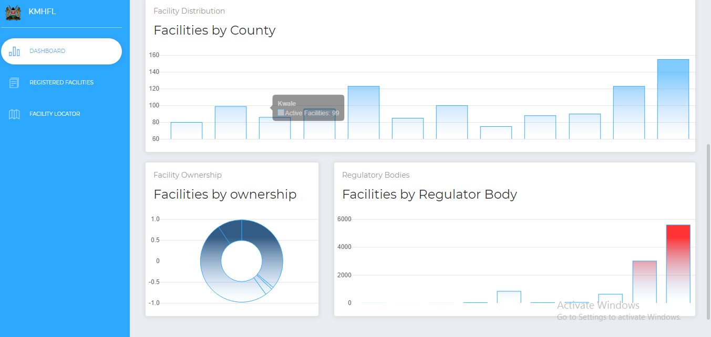
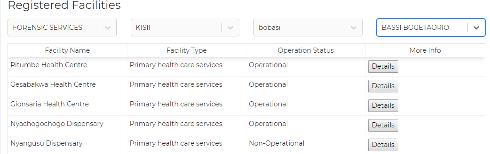

Userguide¶
Chapter 1: Introduction¶
Background¶
The Kenya Master Health Facility List application is basically built for the public. It provides listings for health services provided by the ministry of health,non-governmnental organisations and faith-based organisations across the country. Identification of nearby facilities in regard to the health service needed is made possible which is indeed a helpful thing when someone needs to find a health facility around the place they are. It also gives an opportunity to comment on how well the health facilities served you. The app works with the geolocator which aids in mapping the location of the user. Sections of the dashboard, registered facilities and the facility locator are provided to help easen using the application.
Problem Statement¶
Currently, the Kenya Master Health Facility List system has a limited audience for its use. That is, the general public cannot be aided with the system in locating facilities to access services needed. Also, dissagregation of the health facility location is based on the old administrative hierachy. This calls for a redesign of the system in the form of a progressive web app to a more mobile friendly state and improve mobile user experience. In doing this, generation of dashboard summary reports, good visualization of existing data and extending of health facility location disaggregation functionality will be involved.
Objectives¶
To develop and application that will help users locate facilities so as to access services they need.
Chapter 2: Kenya Master Health Facility List PWA¶
Getting Started¶
Application Requirements¶
The kmhfl pplication can be found on the website using the link http.www.kmhfl.org. It can be installed with the ‘add to home screen’ prompt. Chrome browser is recommended for the application. This is because of the javascript that is used in the app. Its able to load faster in chrome.
Home Page¶

You can search for maternity, emergency, pharmacy services, and more by clicking on the rectangular card below each service labelled “facilities near me”. On clicking it, you will be directed on a map page that shows you facilities close facilities that offer the service you selected. Services not available on the home page can be found on the ‘facility geolocator’ page which is illustrated later.

Distibution of health facilities location is based on current administrative hierarchies i.e Country,County,Subcounty, and Ward. Facilities are also categorised according to their ownership and regulatory body.
Chapter 3: Registered Facilities¶
This area provides an option of searching the service you need per the location that you are in. For example: The service card has a dropdown on which you can search service needed by clicking on one of the services. This is to be done the same with other cards such as county,subcounty and ward. Details of what you want will then be listed.
Other useful details about a facility is available by clicking on the “Details” card.This should come as a popup. Example:

Chapter 4: Facility Locator¶
On clicking on the facility geolocator, you are directed to place you are diirectly and near health facilities are made visible. This enables you to identify and choose which facility to obtain services from.